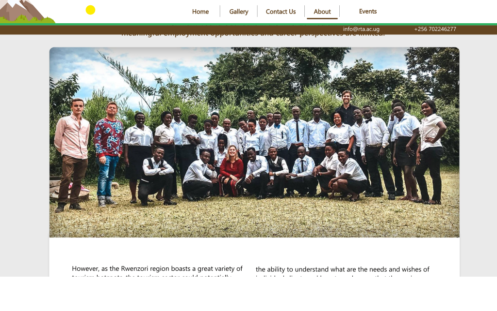

Rwezori toursim academy started in 2019 as a collaboration between RENA Foundation Uganda,
Eye Opener Workers and Matooke tours. RENA Foundation Uganda is a local NGO
and a leading partner. Eye Opener brings in the innovations in skilling.